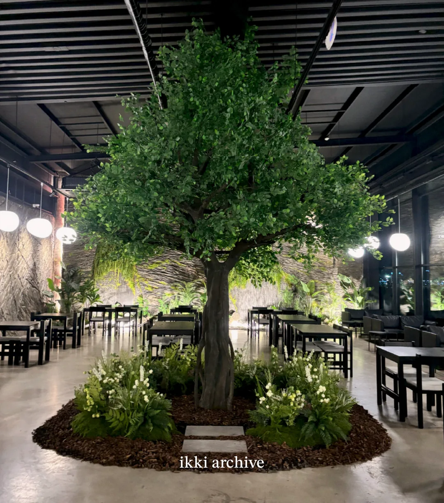

Instagram
발견되는 곳.
새로운 작업과 일상을 빠르게 보여주고 처음 관심을 만듭니다.
시공사진과 작업은 충분한데 홈페이지까지 챙길 시간은 없는 대표님을 위해, 이미 가지고 계신 자료를 바탕으로 작업과 강점이 제대로 보이는 자사 영업 포트폴리오를 만들어드립니다.

홈페이지가 필요하다는 말을 들어도 먼저 드는 생각은 대개 비슷합니다. “그래서 그걸 내가 언제 하지?”
휴대폰, 인스타, 카톡에 시공사진은 수백 장. 고객에게 보여줄 때마다 다시 찾습니다.
현장과 견적을 보다 보면 업로드는 밀립니다. 몇 달 전 게시물이 마지막이어도 이상하지 않습니다.
현장, 견적, 전화, 자재 확인만 해도 하루가 끝납니다. 홈페이지 기획까지 할 여유는 없습니다.
새로운 관리자 화면, 매일 올릴 콘텐츠, 복잡한 운영 업무가 생긴다면 굳이 시작하고 싶지 않습니다.
사진과 기본 정보, 그리고 짧은 대화. 그 다음부터는 WeThru가 사업을 듣고, 흩어진 자료를 정리하고, 고객이 이해할 수 있는 순서로 웹에 옮깁니다.
어떤 일을 해왔고, 어떤 현장을 잘하며, 고객이 왜 이 업체를 선택하는지 듣습니다.
사진, 소개, 경력, 작업 방식처럼 이미 있는 자료를 고객이 보기 좋은 순서로 다시 묶습니다.
사진만 나열하지 않습니다. 프로젝트, 대표 이야기, 강점, 상담 동선을 하나의 흐름으로 설계합니다.
모바일과 PC에서 바로 볼 수 있는 사장님 이름의 포트폴리오 사이트로 구현하고 배포합니다.

IKKI에는 이미 좋은 시공사진과 작업 지역, 대표의 디자인 배경, 시공 과정과 다양한 프로젝트가 있었습니다. WeThru가 한 일은 그것을 새로 꾸며내는 것이 아니라 고객이 한 번에 이해할 수 있도록 한곳에 연결하는 것이었습니다.
“잘하고 있는 일을,
고객이 제대로 볼 수 있게.”


대체하려는 게 아닙니다. 각각 하는 일이 다릅니다.
발견되는 곳.
새로운 작업과 일상을 빠르게 보여주고 처음 관심을 만듭니다.
더 깊게 보는 곳.
관심이 생긴 고객이 프로젝트, 작업 방식, 대표의 차이를 한 번에 확인합니다.
결정하는 곳.
충분히 확인하고 온 고객과 대표가 직접 범위와 조건을 이야기합니다.
플랫폼을 버리는 것이 아니라, 플랫폼에서 관심을 가진 사람이 사장님 이름의 공간에서 더 깊게 확인할 다음 단계를 만드는 겁니다.
물론 가능합니다. WeThru의 차이는 코드를 대신 치는 데 있지 않습니다. 사업을 듣고 → 고객이 선택할 이유를 찾아내고 → 정보를 구조화하고 → 그것을 웹으로 표현하는 것. 홈페이지는 그 결과물입니다.
기존 시공사진 + 업체 기본 정보 + 짧은 대화. 완벽하게 정리해서 주실 필요도 없습니다. 정리하는 것부터 저희 일입니다.
지역, 평수, 예산, 공사 범위, 희망 일정, 참고 레퍼런스처럼 상담 전에 필요한 정보를 받을 수 있게 구성할 수 있습니다. 무조건 문의가 늘어난다고 약속하지 않습니다. 대신 고객이 상담 전에 사장님의 작업과 차이를 충분히 보고, 필요한 정보를 갖고 연락할 수 있게 만듭니다.
기존 시공사진과 업체 기본 정보가 있으면 시작할 수 있습니다. 자료가 깔끔하게 정리되어 있지 않아도 됩니다. 짧은 인터뷰 후 구성, 문구, 디자인, 구현은 WeThru가 진행합니다.
매일 콘텐츠를 올리는 운영형 사이트가 아니라, 대표님의 작업과 강점을 정리해두는 포트폴리오를 기본으로 설계합니다. 오픈 후 수정과 유지관리는 계약된 범위에 따라 진행하며 ‘평생 무료 수정’이나 ‘무제한 AS’를 약속하지 않습니다.
둘 중 하나를 없애는 서비스가 아닙니다. SNS와 블로그는 발견과 지속적인 소통에 강하고, 자사 사이트는 관심이 생긴 고객이 업체의 프로젝트와 차이를 한 번에 깊게 확인하는 역할을 합니다.
맞습니다. 직접 만들 수 있다면 제작비를 줄일 수 있습니다. 다만 WeThru는 단순 제작보다 사업과 작업을 듣고, 무엇을 보여줘야 하는지 정리하는 과정까지 함께 제공합니다. 대표님의 시간이 어디에 더 가치 있게 쓰이는지를 기준으로 판단하시면 됩니다.
현재 인테리어 포트폴리오 파일럿은 75만원을 기준으로 상담하고 있습니다. 기본 범위는 모바일 대응, Hero, 업체/대표 소개, 서비스, 시공사례 약 8~12개, 문의 CTA, 기본 검색 설정, SNS 공유용 OG, 1회 수정, 기본 배포입니다. 페이지·기능 추가와 별도 유지관리는 범위 확인 후 안내합니다.
아닙니다. 대표 화면, 일부 프로젝트, 업체에 맞는 방향성을 보여드리는 Preview입니다. 전체 사이트 설계와 제작은 진행 결정 후 시작합니다.
홈페이지부터 계약하라고 말씀드리지 않습니다. 현재 공개된 작업과 기본 정보를 바탕으로, 어떤 방향으로 정리할 수 있을지 먼저 이야기해보세요.
Preview는 완성 사이트 전체 제공이 아닌 대표 화면·일부 프로젝트·방향성 제안 범위입니다.